| state | 0 | 1 | 2 | 3 | 4 | 5 | 6 | 7 | 8 | 9 | 10 |
| pi | 0.011 | 0.021 | 0.043 | 0.085 | 0.170 | 0.340 | 0.170 | 0.085 | 0.043 | 0.021 | 0.011 |
Markov Chain Monte Carlo
2026-11-27
Draw \theta_1,\theta_2,\ldots,\theta_n\sim \pi for a target \pi (typically a posterior known up to a constant), then estimate E_\pi[a(\theta)] by \frac1n\sum_i a(\theta_i).
We first need a little theory of Markov chains.
Markov chain. \{\theta_i: i = 0,1,2,\ldots\} is a Markov chain if the future depends on the past only through the present: P(\theta_i\mid\theta_0,\theta_1,\ldots,\theta_{i-1}) = T(\theta_i\mid\theta_{i-1})
Transition distribution. T(\theta'\mid\theta), also written T(\theta\to\theta'), is the distribution of the next state given the current one; it does not depend on i. For a finite state space it is a matrix, T_{jk} = P(\theta_i = k\mid\theta_{i-1} = j), with rows summing to 1.
\theta_0 \xrightarrow{\ T(\theta_1\mid\theta_0)\ } \theta_1 \xrightarrow{\ T(\theta_2\mid\theta_1)\ } \theta_2 \xrightarrow{\ \ } \cdots
A chain is specified by a starting value \theta_0 and T; simulating it means drawing \theta_i\sim T(\cdot\mid\theta_{i-1}) repeatedly.
Equilibrium distribution. \pi is the equilibrium (limiting) distribution of the chain if, for every start \theta_0, \lim_{n\to\infty} P(\theta_n = \theta\mid\theta_0) = \pi(\theta). After many steps the chain forgets where it started, and the marginal distribution of \theta_n settles at \pi.
The MCMC question: the usual Markov-chain problem is given T, find \pi. MCMC reverses it: given a target \pi, design a T whose equilibrium distribution is \pi.
Two conditions on the pair (\pi, T) are the tools for both directions: invariance and reversibility.
\pi is an invariant (stationary) distribution of T if \int \pi(\theta)\,T(\theta\to\theta')\,d\theta = \pi(\theta') \qquad\text{for all }\theta'
For a finite state space: \sum_\theta \pi(\theta)\,T(\theta\to\theta') = \pi(\theta'), i.e. \pi^\top T = \pi^\top.
Meaning: if \theta\sim\pi and \theta'\sim T(\theta\to\cdot), then \theta'\sim\pi. One step of the chain applied to a \pi-distributed input returns a \pi-distributed output: \pi is a fixed point of T.
Invariance is what makes \pi a candidate equilibrium: once the chain reaches \pi, it stays there.
It is a global condition: it involves summing (integrating) over all \theta, which is awkward to check directly for a proposed T.
Points \theta_1,\theta_2,\ldots drawn from \pi = N(0,1) (top), each moved one step by T (arrows), here \theta' = 0.6\,\theta + 0.8\,Z. The moved points \theta_1',\theta_2',\ldots (bottom) are again distributed as \pi.
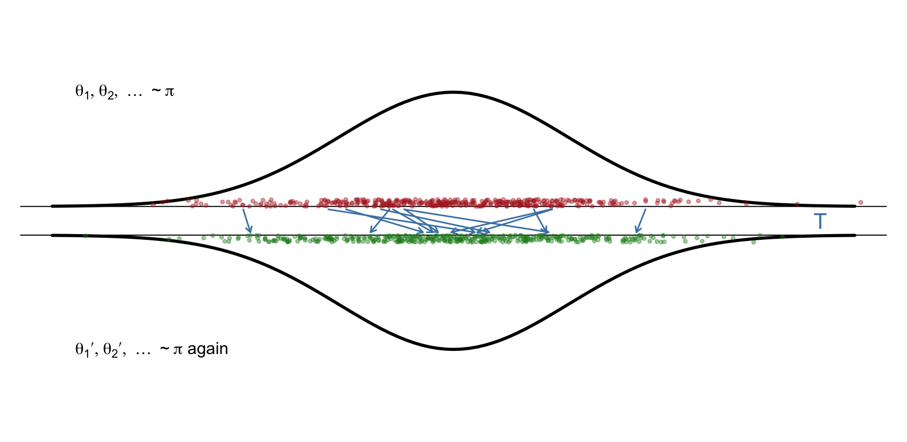
T is reversible with respect to \pi, or satisfies detailed balance, if \pi(\theta)\,T(\theta\to\theta') = \pi(\theta')\,T(\theta'\to\theta) \qquad\text{for all }\theta,\theta'
Theorem. Detailed balance \Longrightarrow invariance.
Proof. Sum (integrate) both sides over \theta: \int\pi(\theta)\,T(\theta\to\theta')\,d\theta = \int\pi(\theta')\,T(\theta'\to\theta)\,d\theta = \pi(\theta')\underbrace{\int T(\theta'\to\theta)\,d\theta}_{=\,1} = \pi(\theta'). \qquad\blacksquare
Use: to find an invariant distribution of a given T, solve the pairwise equations for \pi; to design T for a given \pi (Gibbs, MH, HMC), make the pairwise equations hold.
Invariance alone is not enough: a chain that never moves leaves every distribution invariant. If
then, for any \theta_0, \theta_n\to\pi in distribution (\pi is the equilibrium distribution), and ergodic averages converge: \frac1n\sum_{i=1}^n a(\theta_i)\ \longrightarrow\ E_\pi\big[a(\theta)\big]
Practice: simulate T long enough, discard an initial burn-in, and treat the remaining \theta_i as (dependent) draws from \pi.
Left: periodic, the chain oscillates forever. Middle: reducible, the long-run behaviour depends on which piece the chain starts in. Right: irreducible and aperiodic (self-loops break any cycle).
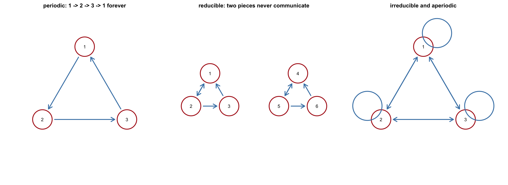
Two chains on the states \{0,1,\ldots,10\} arranged on a circle (indices mod 11, so 10 and 0 are neighbours), with 5 in the middle. Each step moves to a neighbour or stays put; only the probabilities differ:
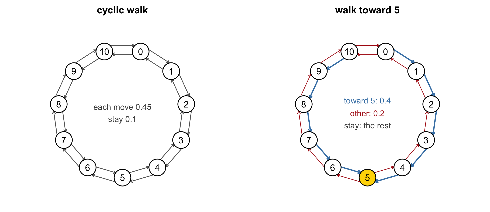
Cyclic walk: T_{\text{cyc}}(i\to i\pm1) = 0.45,\qquad T_{\text{cyc}}(i\to i) = 0.1
Walk toward 5: with d(i) = |i-5| the distance from i to 5 (also around the circle), for a neighbour j = i\pm1, T_{\text{5}}(i\to j) = \begin{cases} 0.4, & d(j) < d(i)\quad(\text{toward } 5)\\ 0.2, & \text{otherwise}\end{cases}
and T_5(i\to i) = 1 - T_5(i\to i+1) - T_5(i\to i-1): 0.4 for every state except 5, where both moves go away (0.6).
For detailed balance: in both chains T(i\to j) = 0 unless j is a neighbour, and i = j is trivial, so only the eleven neighbouring pairs (i, i+1) need to be checked. The stay probabilities never enter.
Detailed balance for each neighbouring pair (i, i+1), i = 0,\ldots,10 (with 11\equiv0): \begin{aligned} \pi(i)\,T(i\to i+1) &= \pi(i+1)\,T(i+1\to i)\\ \Longleftrightarrow\quad 0.45\,\pi(i) = 0.45\,\pi(i+1) &\quad\Longleftrightarrow\quad \pi(i+1) = \pi(i) \end{aligned}
Going around the circle, \pi(0) = \pi(1) = \cdots = \pi(10), and normalizing, \boxed{\ \pi_{\text{cyc}}(i) = \frac{1}{11},\qquad i = 0,1,\ldots,10\ }
Hence the cyclic walk converges to the uniform distribution from any start. Every state has the same local picture, so the equilibrium treats them all alike.
In each neighbouring pair except \{10, 0\}, one state, j, is one step closer to 5 than the other, i. Detailed balance: \pi(i)\,\underbrace{T(i\to j)}_{0.4\ (\text{toward})} = \pi(j)\,\underbrace{T(j\to i)}_{0.2\ (\text{away})} \quad\Longleftrightarrow\quad \pi(j) = 2\,\pi(i)
For the pair \{10, 0\} (both at distance 5): 0.2\,\pi(10) = 0.2\,\pi(0). Each step closer to 5 doubles \pi, so \pi(i)\propto 2^{-|i-5|}. Normalizing with \sum_i 2^{5-|i-5|} = 32 + 2(16+8+4+2+1) = 94, \boxed{\ \pi_5(i) = \frac{2^{\,5-|i-5|}}{94},\qquad i = 0,1,\ldots,10\ }
| state | 0 | 1 | 2 | 3 | 4 | 5 | 6 | 7 | 8 | 9 | 10 |
| pi | 0.011 | 0.021 | 0.043 | 0.085 | 0.170 | 0.340 | 0.170 | 0.085 | 0.043 | 0.021 | 0.011 |
cyc_step <- function(s, u)
ifelse(u < 0.45, (s + 1) %% 11, ifelse(u < 0.9, (s - 1) %% 11, s))
toward5_step <- function(s, u) {
fwd <- (s + 1) %% 11; bwd <- (s - 1) %% 11
p_fwd <- ifelse(abs(fwd - 5) < abs(s - 5), 0.4, 0.2) # toward 5: 0.4, other: 0.2
p_bwd <- ifelse(abs(bwd - 5) < abs(s - 5), 0.4, 0.2)
ifelse(u < p_fwd, fwd, ifelse(u < p_fwd + p_bwd, bwd, s))
}
sim_chain <- function(step, ini, iters) {
mc <- integer(iters + 1); mc[1] <- ini
for (i in 2:(iters + 1)) mc[i] <- step(mc[i - 1], runif(1))
mc
}
set.seed(1); cyc <- sim_chain(cyc_step, 2, 20000); tw5 <- sim_chain(toward5_step, 2, 20000)
pi_cyc <- rep(1 / 11, 11); pi_5 <- 2^(5 - abs(0:10 - 5)) / 94 # from detailed balance
freq <- function(mc) as.vector(table(factor(mc[-(1:200)], levels = 0:10))) / length(mc[-(1:200)])
tab <- rbind(cyc_freq = freq(cyc), pi_cyc, tw5_freq = freq(tw5), pi_5); colnames(tab) <- 0:10
round(tab, 3) 0 1 2 3 4 5 6 7 8 9 10
cyc_freq 0.097 0.092 0.086 0.086 0.084 0.086 0.088 0.091 0.092 0.098 0.101
pi_cyc 0.091 0.091 0.091 0.091 0.091 0.091 0.091 0.091 0.091 0.091 0.091
tw5_freq 0.007 0.015 0.038 0.078 0.167 0.358 0.176 0.088 0.044 0.019 0.009
pi_5 0.011 0.021 0.043 0.085 0.170 0.340 0.170 0.085 0.043 0.021 0.011One chain of each kind, started at state 2, run for 20{,}000 steps (first 200 discarded). Bars: observed frequencies; points: \pi from detailed balance.
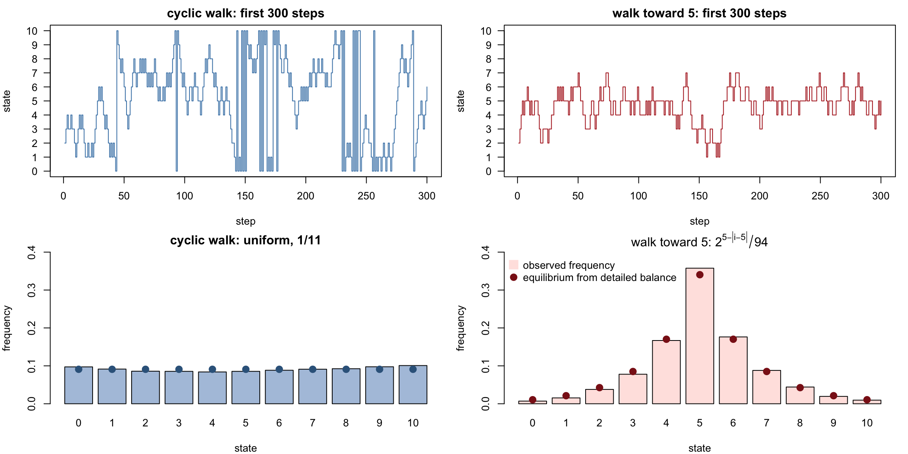
\theta = (\theta_1,\theta_2), and both full conditionals \pi(\theta_1\mid\theta_2) and \pi(\theta_2\mid\theta_1) can be sampled directly, although the joint \pi(\theta_1,\theta_2) cannot. Repeat for t = 1,2,\ldots: \theta_1^{(t)}\sim\pi\big(\theta_1\mid\theta_2^{(t-1)}\big), \qquad \theta_2^{(t)}\sim\pi\big(\theta_2\mid\theta_1^{(t)}\big)
Each step replaces one coordinate by a draw from its full conditional given the current values of the others.
Why it works. Each half-step leaves \pi invariant: if (\theta_1,\theta_2)\sim\pi, then \theta_2\sim\pi(\theta_2) (its marginal), and replacing \theta_1 by a fresh draw from \pi(\theta_1\mid\theta_2) gives a pair with joint density \pi(\theta_2)\,\pi(\theta_1\mid\theta_2) = \pi(\theta_1,\theta_2). Cycling through both coordinates keeps \pi invariant; with everywhere-positive full conditionals the chain is irreducible and aperiodic.
If the target \pi(\theta) is awkward but is the marginal of a joint density over \theta and extra unknowns z, \pi(\theta) = \int\pi(\theta,z)\,dz, then a Gibbs sampler on (\theta,z) that alternates z\sim\pi(z\mid\theta), \qquad \theta\sim\pi(\theta\mid z) has \pi(\theta,z) as its invariant distribution. Its \theta-coordinates are draws from \pi(\theta); the z’s are simply discarded.
This pays off when the conditionals given z are standard even though \pi(\theta) is not. The z may be
x_1,\ldots,x_n\mid\mu,\sigma^2 \overset{iid}{\sim} N(\mu,\sigma^2), \qquad \mu\sim N(\mu_0,\sigma_0^2), \qquad \sigma^2\sim\text{IG}(a_0,\lambda_0)
Inverse gamma: 1/\sigma^2\sim\text{Gamma}(a_0,\lambda_0), with density p(\sigma^2)\propto(\sigma^2)^{-(a_0+1)}\,e^{-\lambda_0/\sigma^2}.
Joint posterior \begin{aligned} P(\mu,\sigma^2\mid x)\ \propto\ & e^{-(\mu-\mu_0)^2/(2\sigma_0^2)}\cdot(\sigma^2)^{-(a_0+1)}e^{-\lambda_0/\sigma^2} \\ &\times(\sigma^2)^{-n/2}\exp\Big\{-\sum_{i=1}^n\frac{(x_i-\mu)^2}{2\sigma^2}\Big\} \end{aligned}
Two-dimensional, no closed-form normalizing constant, but each conditional is standard.
Graph: squares are fixed hyperparameters, open circles unknowns, shaded circles data; the plate repeats x_i. A node’s full conditional depends only on its parents, children and children’s other parents.
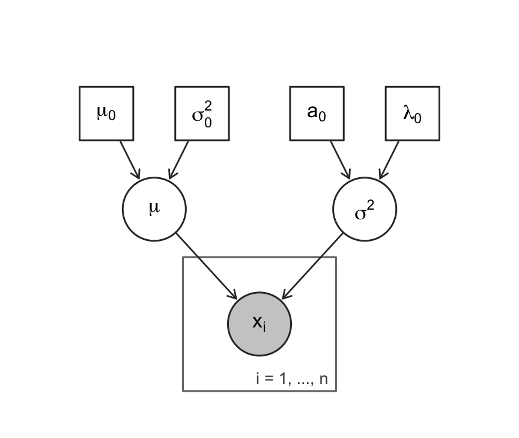
Keep only factors involving \mu and expand \sum_i(x_i-\mu)^2 = n\mu^2 - 2n\mu\bar x + \sum_i x_i^2: P(\mu\mid\sigma^2,x) \propto \exp\Big\{-\frac12\Big[\Big(\frac1{\sigma_0^2}+\frac n{\sigma^2}\Big)\mu^2 - 2\Big(\frac{\mu_0}{\sigma_0^2}+\frac{n\bar x}{\sigma^2}\Big)\mu\Big]\Big\}
Matching with the N(m,v) kernel \exp\{-\tfrac12(\mu^2/v - 2m\mu/v)\}: \mu\mid\sigma^2,x\ \sim\ N(m,v), \qquad \frac1v = \frac1{\sigma_0^2}+\frac n{\sigma^2}, \qquad \frac mv = \frac{\mu_0}{\sigma_0^2}+\frac{n\bar x}{\sigma^2}
Keep only factors involving \sigma^2: \begin{aligned} P(\sigma^2\mid\mu,x) &\propto(\sigma^2)^{-(a_0+1)}e^{-\lambda_0/\sigma^2}\cdot(\sigma^2)^{-n/2}e^{-\sum_i(x_i-\mu)^2/(2\sigma^2)} \\ &= (\sigma^2)^{-\left(\frac n2+a_0+1\right)}\exp\Big\{-\frac{\lambda_0+\frac12\sum_i(x_i-\mu)^2}{\sigma^2}\Big\} \end{aligned}
again an inverse gamma kernel: \sigma^2\mid\mu,x\ \sim\ \text{IG}\Big(\frac n2+a_0,\ \frac12\sum_{i=1}^n(x_i-\mu)^2+\lambda_0\Big)
Prior: \mu_0 = 0, \sigma_0^2 = 100, a_0 = \lambda_0 = 1 (weak). In the code s02 is \sigma_0^2 and lam0 is \lambda_0.
mu0 <- 0; s02 <- 100; a0 <- 1; lam0 <- 1 # prior
gibbs_norm <- function(iters, x, mu_init = 0, s2_init = 1) {
n <- length(x)
out <- matrix(NA_real_, iters, 2, dimnames = list(NULL, c("mu", "s2")))
mu <- mu_init; s2 <- s2_init
for (t in seq_len(iters)) {
v <- 1 / (1 / s02 + n / s2) # mu | sigma^2, x ~ N(m, v)
mu <- rnorm(1, v * (mu0 / s02 + sum(x) / s2), sqrt(v))
s2 <- 1 / rgamma(1, shape = n / 2 + a0, rate = sum((x - mu)^2) / 2 + lam0) # IG
out[t, ] <- c(mu, s2)
}
out
}
set.seed(2)
x <- rnorm(50, 10, 2) # 50 observations from N(10, 2^2)
draws_gibbs <- gibbs_norm(10000, x)
burn <- 1:200; mu_g <- draws_gibbs[-burn, "mu"]; sd_g <- sqrt(draws_gibbs[-burn, "s2"])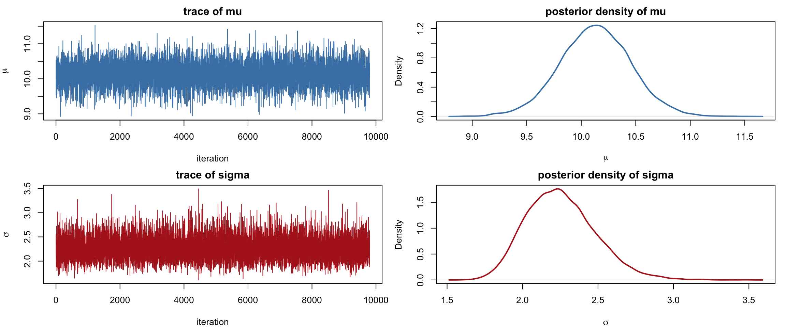
| parameter | mean | sd | 2.5% | 97.5% |
|---|---|---|---|---|
| mu | 10.130 | 0.324 | 9.488 | 10.768 |
| sigma | 2.255 | 0.230 | 1.862 | 2.751 |
Left: the first 30 Gibbs moves on the joint posterior (contours), from a poor start. Each move is horizontal or vertical, since one coordinate changes at a time. Right: trace plots of the first 100 iterations.
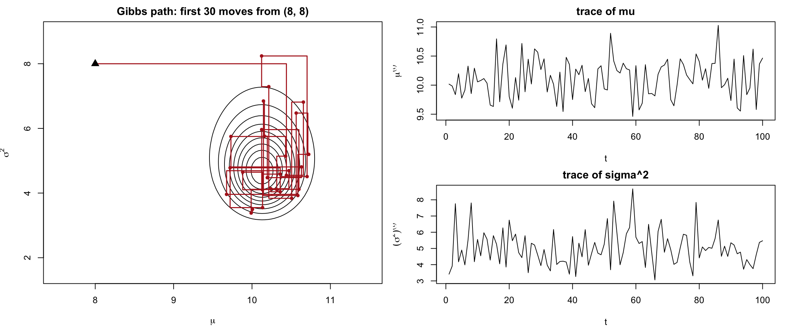
x_1,\ldots,x_n\mid\mu,\sigma^2\overset{iid}{\sim}N(\mu,\sigma^2) with the priors of Example 2, but not every x_i is seen exactly. For each unit we observe (I_i,\delta_i):
The \delta_i are independent of the x_i and of (\mu,\sigma^2), so the likelihood is L(\mu,\sigma^2) = \prod_{i:\,\delta_i = 1}\frac1\sigma\,\varphi\Big(\frac{x_i-\mu}\sigma\Big) \times\prod_{i:\,\delta_i = 0}\Big[\Phi\Big(\frac{b_i-\mu}\sigma\Big)-\Phi\Big(\frac{a_i-\mu}\sigma\Big)\Big]
The products of \Phi differences make the posterior non-standard: neither conditional of \mu nor of \sigma^2 is normal or inverse gamma.
Treat the censored x_i as extra unknowns.
One Gibbs iteration: \begin{aligned} x_i^{(t)} &\sim P\big(x_i\mid\mu^{(t-1)},\sigma^{2(t-1)},I_i,\delta_i\big)\ \ (\text{censored }i)\\ \mu^{(t)} &\sim P\big(\mu\mid x^{(t)},\sigma^{2(t-1)}\big)\\ \sigma^{2(t)} &\sim P\big(\sigma^2\mid x^{(t)},\mu^{(t)}\big) \end{aligned}
Integrating x_i out gives back the likelihood: \int_{a_i}^{b_i}\sigma^{-1}\varphi((x-\mu)/\sigma)\,dx is the \Phi difference.
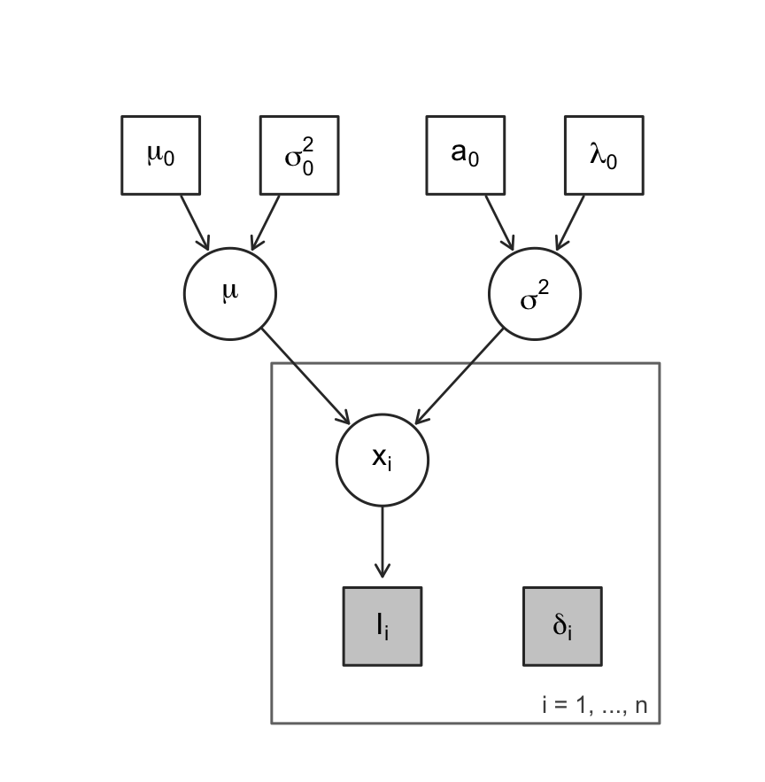
x_i is now unknown; the observed I_i and \delta_i are shaded squares. \delta_i has no arrows: it carries no information about (\mu,\sigma^2).
Each interval is stored as its endpoints a, b, with a = b = x for an uncensored unit; truncnorm::rtruncnorm also handles b_i = \infty.
gibbs_norm_censored <- function(iters, a, b, delta) { # prior constants from Example 2
n <- length(a); cens <- delta == 0
x <- ifelse(cens, pmin(a + 1, b), a) # start: exact values, or a point in the interval
mu <- mean(x); s2 <- var(x)
out <- matrix(NA_real_, iters, 2)
for (t in seq_len(iters)) {
### censored units: x_i | mu, sigma^2 ~ N(mu, sigma^2) truncated to [a_i, b_i)
x[cens] <- rtruncnorm(sum(cens), a = a[cens], b = b[cens], mean = mu, sd = sqrt(s2))
### complete-data conditionals of Example 2
v <- 1 / (1 / s02 + n / s2)
mu <- rnorm(1, v * (mu0 / s02 + sum(x) / s2), sqrt(v))
s2 <- 1 / rgamma(1, shape = n / 2 + a0, rate = sum((x - mu)^2) / 2 + lam0)
out[t, ] <- c(mu, s2)
}
list(mu = out[, 1], sd = sqrt(out[, 2]))
}n = 200 values from N(100,40^2). Each is observed exactly with probability 0.3; otherwise values above 150 are only known to be at least 150 (I_i = [150,\infty)), and the rest only to the decade, I_i = [10k,10k+10).
| truth | naive (lower ends) | posterior mean (95% interval) | |
|---|---|---|---|
| mu | 100 | 96.88 | 93.38 (87.89, 98.69) |
| sigma | 40 | 38.00 | 39.65 (35.75, 43.93) |
The data have 70 exact values, 121 decade intervals and 9 right-censored values. Treating each censored value as the lower end of its interval biases both estimates downward. The augmented Gibbs sampler recovers \mu and \sigma, because it imputes each censored x_i from its conditional and so propagates the uncertainty about where in I_i it lies.
Observations y_1,\ldots,y_n modelled as \text{Cauchy}(\mu,\sigma), a heavy-tailed model that is robust to outliers: p(y_i\mid\mu,\sigma) = \frac{1}{\pi\sigma(1+r_i^2)}, \qquad r_i = \frac{y_i-\mu}{\sigma}
Priors \mu\sim N(\mu_0,\tau^2) and \sigma^2\sim\text{IG}(a_0,b_0). The posterior p(\mu,\sigma^2\mid y)\propto e^{-(\mu-\mu_0)^2/(2\tau^2)}\,(\sigma^2)^{-(a_0+1)}e^{-b_0/\sigma^2}\prod_i\sigma^{-1}(1+r_i^2)^{-1} has no standard conditionals, because of the factors (1+r_i^2)^{-1}. Data augmentation fixes this.
Step 1. Introduce a latent variance v_i per observation: y_i\mid\mu,\sigma^2,v_i\sim N(\mu,\sigma^2v_i), \qquad v_i\sim\text{IG}\big(\tfrac12,\tfrac12\big), \qquad p(v_i) = \tfrac{1}{\sqrt{2\pi}}\,v_i^{-3/2}e^{-1/(2v_i)}
Integrating out v_i, using \int_0^\infty v^{-2}e^{-c/v}\,dv = 1/c: \int_0^\infty\frac{e^{-r_i^2/(2v_i)}}{\sqrt{2\pi\sigma^2v_i}}\cdot\frac{v_i^{-3/2}e^{-1/(2v_i)}}{\sqrt{2\pi}}\,dv_i = \frac{1}{2\pi\sigma}\int_0^\infty v_i^{-2}e^{-(1+r_i^2)/(2v_i)}\,dv_i = \frac{1}{\pi\sigma(1+r_i^2)}
So a Gibbs sampler on (v,\mu,\sigma^2) samples the Cauchy posterior once the v_i are ignored.
Step 2. Multiplying priors, latent densities and the normal likelihood, \begin{aligned} p(\mu,\sigma^2,v\mid y)\propto{}& e^{-\frac{(\mu-\mu_0)^2}{2\tau^2}}(\sigma^2)^{-(a_0+1)}e^{-b_0/\sigma^2}\\ &\times\prod_{i=1}^n\Big[(\sigma^2v_i)^{-1/2}e^{-\frac{(y_i-\mu)^2}{2\sigma^2v_i}}\cdot v_i^{-3/2}e^{-\frac{1}{2v_i}}\Big] \end{aligned}
Step 3: each v_i. Only the i-th term of the product contains v_i: p(v_i\mid\mu,\sigma^2,y)\propto v_i^{-(1+1)}\exp\Big\{-\frac{(1+r_i^2)/2}{v_i}\Big\} v_i\mid\mu,\sigma^2,y\sim\text{IG}\Big(1,\ \frac{1+r_i^2}{2}\Big), \quad\text{independently over } i
An outlier (large |r_i|) gets a large latent variance.
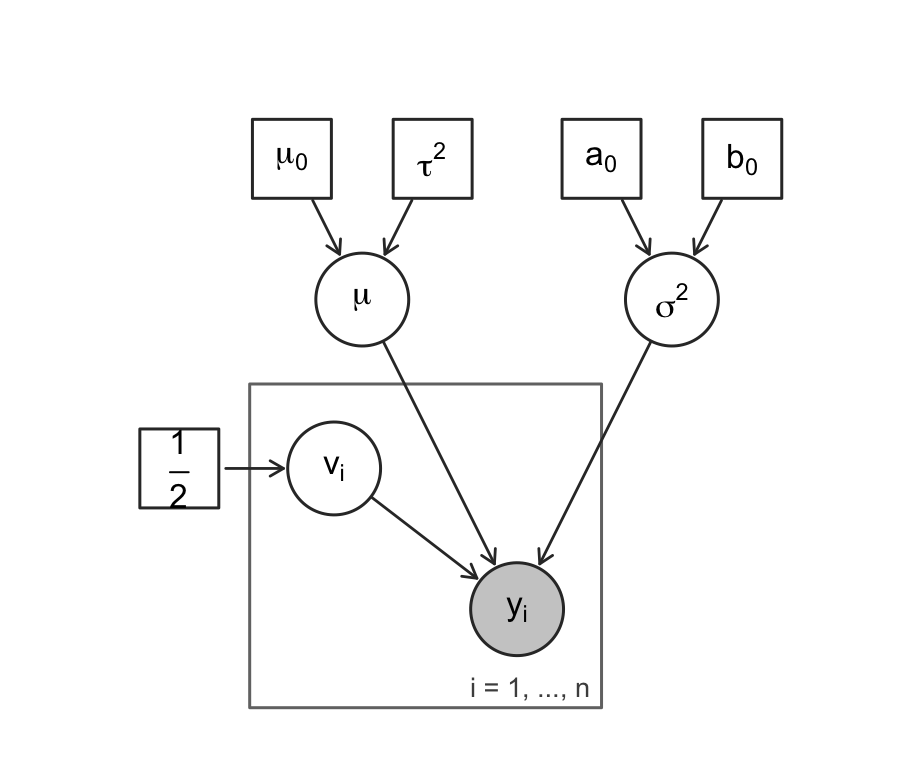
Each y_i has its own latent variance v_i; its only child is y_i, so its conditional involves only y_i, \mu, \sigma^2.
Step 4: \mu. With observation precisions w_i = 1/(\sigma^2v_i), p(\mu\mid\sigma^2,v,y)\propto\exp\Big\{-\frac12\Big[\Big(\frac1{\tau^2}+\sum_iw_i\Big)\mu^2-2\Big(\frac{\mu_0}{\tau^2}+\sum_iw_iy_i\Big)\mu\Big]\Big\} \mu\mid\sigma^2,v,y\sim N(m,s^2), \qquad \frac1{s^2} = \frac1{\tau^2}+\sum_{i=1}^nw_i, \qquad m = s^2\Big(\frac{\mu_0}{\tau^2}+\sum_{i=1}^nw_iy_i\Big)
A precision-weighted mean as in Example 2, but each observation has its own weight w_i: an outlier, with large v_i, has a small weight and barely moves \mu. This is where the robustness comes from.
Step 5: \sigma^2. p(\sigma^2\mid\mu,v,y)\propto(\sigma^2)^{-(a_0+\frac n2+1)}\exp\Big\{-\frac{b_0+\sum_i(y_i-\mu)^2/(2v_i)}{\sigma^2}\Big\} \sigma^2\mid\mu,v,y\sim\text{IG}\Big(a_0+\frac n2,\ b_0+\sum_{i=1}^n\frac{(y_i-\mu)^2}{2v_i}\Big)
\mu_0 = 0, \tau = 10, a_0 = b_0 = 1, and 30 observations from \text{Cauchy}(2,1), including several outliers. The posterior of (\mu,\sigma) is two-dimensional, so it can also be computed exactly on a grid as an independent check.
gibbs_cauchy <- function(iters, y, mu0 = 0, tau = 10, a0 = 1, b0 = 1, mu = 0, s2 = 1) {
n <- length(y)
out <- matrix(NA_real_, iters, 2, dimnames = list(NULL, c("mu", "sigma")))
for (t in seq_len(iters)) {
v <- 1 / rgamma(n, shape = 1, rate = (1 + (y - mu)^2 / s2) / 2) # Step 3
w <- 1 / (s2 * v); prec <- 1 / tau^2 + sum(w) # Step 4
mu <- rnorm(1, (mu0 / tau^2 + sum(w * y)) / prec, sqrt(1 / prec))
s2 <- 1 / rgamma(1, shape = a0 + n / 2, rate = b0 + sum((y - mu)^2 / (2 * v))) # Step 5
out[t, ] <- c(mu, sqrt(s2))
}
out
}
### exact log posterior of (mu, sigma), up to a constant; p(sigma) = p(sigma^2) * 2 sigma
log_post_cauchy <- function(mu, sigma, y, mu0 = 0, tau = 10, a0 = 1, b0 = 1)
sum(dcauchy(y, mu, sigma, log = TRUE)) + dnorm(mu, mu0, tau, log = TRUE) -
(a0 + 1) * log(sigma^2) - b0 / sigma^2 + log(2 * sigma)
set.seed(7)
y_cauchy <- rcauchy(30, location = 2, scale = 1)
draws_cauchy <- gibbs_cauchy(20000, y_cauchy, mu = -5, s2 = 25) # deliberately poor start
keep_c <- -(1:1000)Left: the first 15 iterations from a poor start (triangle), as the staircase of \mu- and \sigma-updates, over the exact posterior contours. Middle, right: traces of the first 500 iterations.
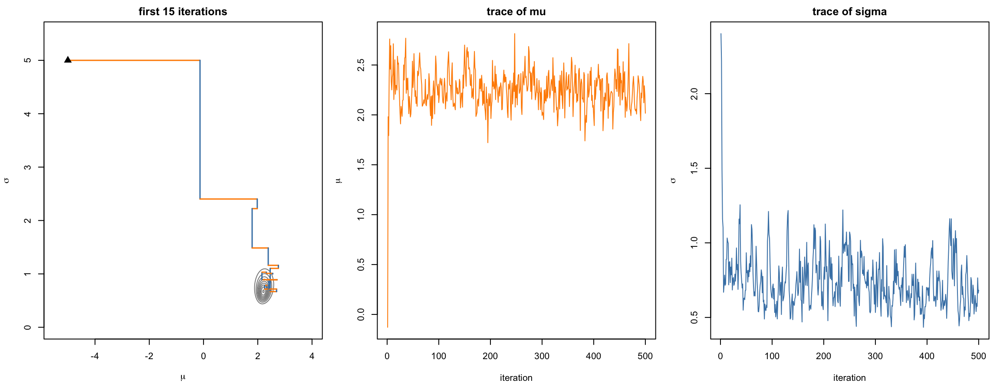
| quantity | Gibbs | exact (grid) |
|---|---|---|
| posterior mean of mu | 2.228 | 2.228 |
| posterior sd of mu | 0.179 | 0.179 |
| posterior mean of sigma | 0.768 | 0.765 |
| posterior sd of sigma | 0.181 | 0.178 |
The sample mean 3.68 and standard deviation 6.43 are dragged off by the outliers; the posterior of \mu stays at the bulk of the data. The Gibbs–Cauchy app runs this sampler one conditional update at a time.
Gibbs needs full conditionals that are known and sample-able. Metropolis–Hastings needs only a target \pi(\theta) computable up to a constant and any proposal \tilde T(\theta^*\mid\theta) we can sample from. Starting from \theta^{(0)}, repeat:
For \theta'\ne\theta, a move \theta\to\theta' requires proposing \theta' and accepting it: T(\theta\to\theta') = \tilde T(\theta\to\theta')\cdot\min\left\{\frac{\pi(\theta')\,\tilde T(\theta'\to\theta)}{\pi(\theta)\,\tilde T(\theta\to\theta')},\ 1\right\}
(For \theta' = \theta, the rejections give a point mass, but detailed balance holds trivially there.) Then \begin{aligned} \pi(\theta)\,T(\theta\to\theta') &= \pi(\theta)\,\tilde T(\theta\to\theta')\cdot\min\left\{\frac{\pi(\theta')\,\tilde T(\theta'\to\theta)}{\pi(\theta)\,\tilde T(\theta\to\theta')},\ 1\right\} \\ &= \min\Big\{\pi(\theta')\,\tilde T(\theta'\to\theta),\ \pi(\theta)\,\tilde T(\theta\to\theta')\Big\} \end{aligned}
This expression is symmetric in \theta and \theta', so exchanging their roles gives the same value: \pi(\theta')\,T(\theta'\to\theta) = \min\Big\{\pi(\theta)\,\tilde T(\theta\to\theta'),\ \pi(\theta')\,\tilde T(\theta'\to\theta)\Big\} = \pi(\theta)\,T(\theta\to\theta'). \qquad\blacksquare
If \tilde T is symmetric, \tilde T(\theta^*\mid\theta) = \tilde T(\theta\mid\theta^*), e.g. \theta^*\sim N\big(\theta^{(t-1)},\varsigma^2\big), the proposal terms cancel: r = \min\left\{\frac{\pi(\theta^*)}{\pi(\theta^{(t-1)})},\ 1\right\}
met_gauss <- function(iters, log_f, stepsizes, ini_value, ...) {
state <- ini_value; no_var <- length(state); logf <- log_f(ini_value, ...)
if (!is.finite(logf)) stop("Initial value has zero probability")
out <- matrix(NA_real_, iters, no_var); n_acc <- 0
for (t in seq_len(iters)) {
proposal <- rnorm(no_var, state, stepsizes); new_logf <- log_f(proposal, ...)
if (log(runif(1)) < new_logf - logf) { state <- proposal; logf <- new_logf; n_acc <- n_acc + 1 }
out[t, ] <- state
}
attr(out, "accept_rate") <- n_acc / iters
out
}Left: proposals from a symmetric N(\theta^{(t-1)},\varsigma^2) kernel; the uphill one is always accepted, the downhill one with probability \pi(\theta^*)/\pi(\theta^{(t-1)}). Right: a trace with rejections showing as flat segments.
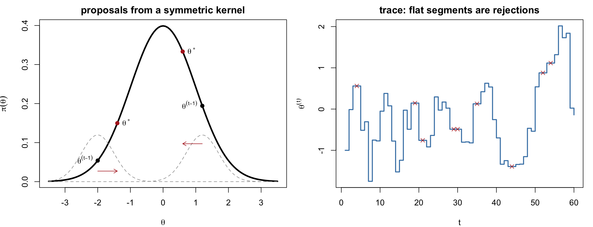
\pi(\theta)\propto\varphi(\theta)\,I(l\le\theta\le u): a proposal outside [l,u] has \pi(\theta^*) = 0, hence r = 0, and is automatically rejected. No special handling is needed; the indicator does it.
Target N(0,2^2) truncated to [4,5], for three step sizes:
log_tnorm <- function(x, mu, sigma, lb, ub) if (x > lb && x < ub) dnorm(x, mu, sigma, log = TRUE) else -Inf
set.seed(6); steps <- c(0.1, 1, 2)
mcs <- lapply(steps, function(st) met_gauss(5000, log_tnorm, stepsizes = st, ini_value = 4.5,
mu = 0, sigma = 2, lb = 4, ub = 5))
ess <- sapply(mcs, coda::effectiveSize) # effective sample size of each chain
par(mfrow = c(1, 3), mar = c(4, 4, 2, 1))
for (k in 1:3) plot(mcs[[k]], type = "l", col = "steelblue", xlab = "iteration", ylab = expression(theta),
main = sprintf("step = %.1f, accept = %.2f, ESS = %.0f", steps[k], attr(mcs[[k]], "accept_rate"), ess[k]))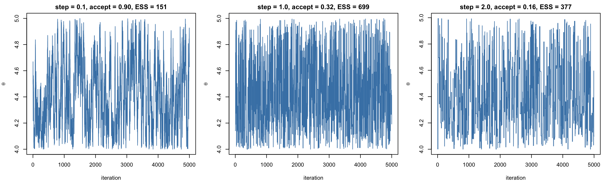
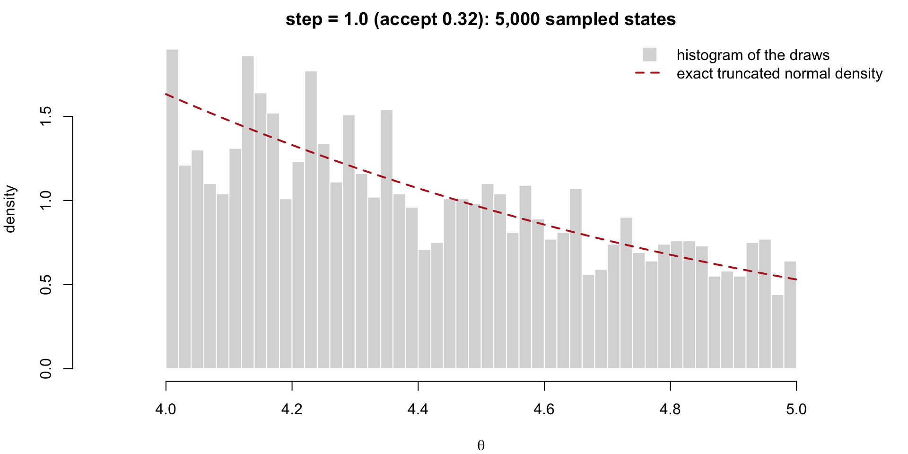
The chain with step 1 (acceptance 0.32, largest effective sample size 699 of 5{,}000) reproduces the exact density, including the decline across [4,5]: \varphi is decreasing there, so states near 4 are visited about 3.1 times as often as states near 5.
Target N(0,1). Tiny steps are almost always accepted but move slowly; huge steps are almost always rejected; both give highly autocorrelated chains.
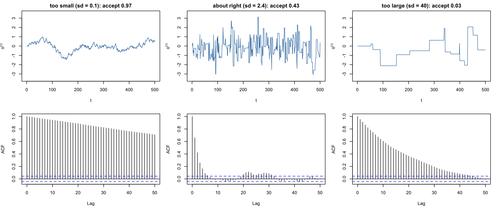
\theta = (\theta_1,\theta_2). Gibbs alternates \theta_1\sim\pi(\theta_1\mid\theta_2) and \theta_2\sim\pi(\theta_2\mid\theta_1). If \pi(\theta_1\mid\theta_2) has no convenient sampler:
Each block transition leaves \pi invariant on its own (the Gibbs argument applies to any \pi(\theta_j\mid\theta_{-j})-invariant transition, not only an exact draw), so the composite sweep leaves the joint \pi invariant. A single MH step per block suffices.
Gibbs where conjugate, Metropolis elsewhere, iterated one parameter or block at a time, is how most general-purpose Bayesian software worked before Hamiltonian methods.
The model, prior and data of Example 2, now sampled by random-walk Metropolis–Hastings: x_1,\ldots,x_n\mid\mu,\sigma^2\overset{iid}{\sim}N(\mu,\sigma^2), \qquad \mu\sim N(\mu_0,\sigma_0^2), \qquad \sigma^2\sim\text{IG}(a_0,\lambda_0)
\sigma^2>0 makes a normal random walk on \sigma^2 wasteful (proposals below zero are rejected), so reparametrize w = \log\sigma^2\in\mathbb R, \qquad \sigma^2 = e^w.
Change of variables. If X\sim f_X and Y = t(X), then f_Y(y) = f_X\big(t^{-1}(y)\big)\,\big|\tfrac{d t^{-1}(y)}{dy}\big|. Here t^{-1}(w) = e^w, so the Jacobian is e^w: P(\mu,w\mid x)\ \propto\ \underbrace{e^{-\frac{(\mu-\mu_0)^2}{2\sigma_0^2}}}_{p(\mu)}\cdot\underbrace{(e^w)^{-(a_0+1)}e^{-\lambda_0e^{-w}}}_{p_{\sigma^2}(e^w)}\cdot\underbrace{(e^w)^{-n/2}e^{-\sum_i(x_i-\mu)^2e^{-w}/2}}_{\text{likelihood}}\cdot\underbrace{e^w}_{\text{Jacobian}}
Omitting the Jacobian e^w would target the wrong distribution.
Collecting the powers of e^w, -(a_0+1) - \tfrac n2 + 1 = -(a_0+\tfrac n2), so \log P(\mu,w\mid x) = -\frac{(\mu-\mu_0)^2}{2\sigma_0^2} - \Big(a_0+\frac n2\Big)w - \Big(\lambda_0+\frac12\sum_{i=1}^n(x_i-\mu)^2\Big)e^{-w} + \text{const}
Random-walk proposal on (\mu, w) jointly, with met_gauss from above; the code is the formula line by line:
log_post_mu_w <- function(mu, w) # prior constants mu0, s02, a0, lam0 from Example 2
-(mu - mu0)^2 / (2 * s02) - (a0 + length(x) / 2) * w - (lam0 + sum((x - mu)^2) / 2) * exp(-w)
mh_norm <- function(iters, stepsizes) {
mc <- met_gauss(iters, function(th) log_post_mu_w(th[1], th[2]), stepsizes, ini_value = c(0, 0))
list(mu = mc[, 1], sd = exp(mc[, 2] / 2), accept_rate = attr(mc, "accept_rate")) # sigma = e^{w/2}
}Preliminary runs at four step-size scales (step = scale/\sqrt n in both coordinates). Top: trace of \mu; bottom: ACF after discarding 500 iterations.
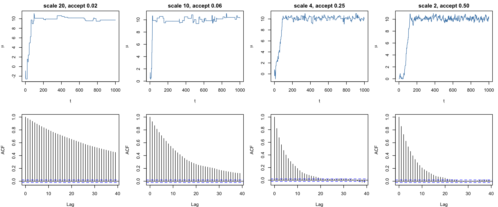
Scale 4 gives the least autocorrelated trace, with an acceptance rate in the 0.2–0.4 range.
The scale-4 chain (acceptance 0.25), 10{,}000 iterations with the first 500 discarded. Solid: kernel density of the sampled states; dashed: the Gibbs sampler of Example 2 for reference.
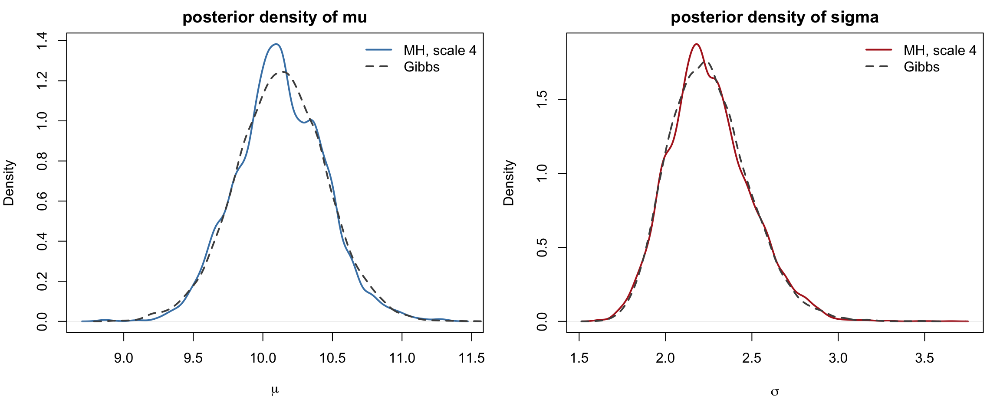
A long chain (50{,}000 iterations) at scale 4, against the Gibbs sampler of Example 2 on the same data and priors:
mh_long <- mh_norm(50000, c(4, 4) / sqrt(length(x)))
keep_mh <- -(1:1000)
knitr::kable(data.frame(
method = c("Metropolis-Hastings", "Gibbs"),
mean_mu = c(mean(mh_long$mu[keep_mh]), mean(mu_g)), sd_mu = c(sd(mh_long$mu[keep_mh]), sd(mu_g)),
mean_sigma = c(mean(mh_long$sd[keep_mh]), mean(sd_g)), sd_sigma = c(sd(mh_long$sd[keep_mh]), sd(sd_g))
), digits = 3, align = c("l", "r", "r", "r", "r"))| method | mean_mu | sd_mu | mean_sigma | sd_sigma |
|---|---|---|---|---|
| Metropolis-Hastings | 10.128 | 0.320 | 2.257 | 0.225 |
| Gibbs | 10.130 | 0.324 | 2.255 | 0.230 |
Two exact samplers of the same posterior agree up to Monte Carlo error.
A random-walk proposal has no sense of direction: reaching a point one posterior standard deviation away takes O(d) steps in d dimensions, and far more along a narrow, correlated ridge, where most proposed directions step off the ridge and are rejected. Gibbs suffers the same way with strongly correlated parameters, since it moves along one axis at a time.
Hamiltonian Monte Carlo (HMC) uses the gradient \nabla\log\pi(\theta) to propose distant points with high acceptance.
Introduce an auxiliary momentum p\in\mathbb R^d and the joint density \pi(\theta,p)\ \propto\ \exp\big\{-H(\theta,p)\big\}, \qquad H(\theta,p) = \underbrace{-\log\pi(\theta)}_{U(\theta)\ \text{potential energy}} + \underbrace{\tfrac12\,p^\top M^{-1}p}_{K(p)\ \text{kinetic energy}}
Hamilton’s equations move (\theta,p) in fictitious time \tau: \frac{d\theta}{d\tau} = \frac{\partial H}{\partial p} = M^{-1}p, \qquad \frac{dp}{d\tau} = -\frac{\partial H}{\partial\theta} = \nabla\log\pi(\theta)
Exact dynamics conserve H, preserve volume, and are reversible. In practice they are discretized by the leapfrog integrator with step size \epsilon, repeated L times: p \leftarrow p + \tfrac\epsilon2\,\nabla\log\pi(\theta), \qquad \theta \leftarrow \theta + \epsilon\,M^{-1}p, \qquad p \leftarrow p + \tfrac\epsilon2\,\nabla\log\pi(\theta)
Leapfrog keeps volume preservation and reversibility exactly (negate p and re-run to get back the start), and introduces only an O(\epsilon^2) error in H, which a Metropolis accept/reject step corrects exactly.
Starting from \theta^{(0)}, repeat:
hmc <- function(log_pi, grad_log_pi, theta, eps, L, iters, M = diag(length(theta))) {
d <- length(theta); Minv <- solve(M); R <- chol(M); out <- matrix(NA_real_, iters, d); n_acc <- 0
for (t in seq_len(iters)) {
p0 <- as.vector(t(R) %*% rnorm(d)); th <- theta; p <- p0 + eps / 2 * grad_log_pi(th)
for (l in seq_len(L)) { th <- th + eps * as.vector(Minv %*% p); if (l < L) p <- p + eps * grad_log_pi(th) }
p <- p + eps / 2 * grad_log_pi(th)
H0 <- -log_pi(theta) + 0.5 * sum(p0 * (Minv %*% p0)); H1 <- -log_pi(th) + 0.5 * sum(p * (Minv %*% p))
if (log(runif(1)) < H0 - H1) { theta <- th; n_acc <- n_acc + 1 }
out[t, ] <- theta
}
attr(out, "accept_rate") <- n_acc / iters
out
}Both samplers get 2,000 iterations from the same start (-2,-2). Left, middle: first 100 draws over the target contours. Right: autocorrelation of \theta_1.
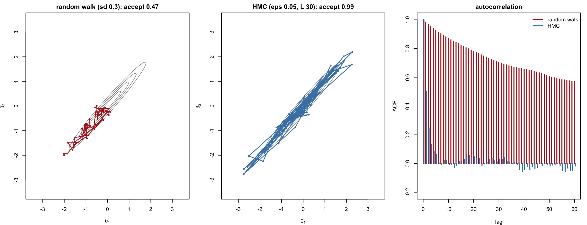
Random-walk Metropolis creeps along the ridge; HMC follows it in one trajectory and its draws are nearly independent. Chi Feng’s MCMC simulators let you tune \epsilon and L and compare samplers interactively.
Every sampler so far needed something derived by hand:
Stan is a probabilistic programming language that automates all of this. Given a model written declaratively (data, parameters, and a log-density), it
The user never derives a conditional or a gradient.
Where Stan earns its keep: hierarchical models with many levels of latent structure, time series with a latent state at every time point, non-conjugate likelihood/prior combinations. Examples 7–9 move from a model where Gibbs is easy to one where nothing else is practical.
The identical model, priors and data as Examples 2 and 5:
Stan works on an unconstrained scale internally (here \log\sigma^2, with the Jacobian added automatically), computes gradients by automatic differentiation, and tunes the step size during warm-up.
| method | mean of mu | sd of mu | mean of sigma | sd of sigma |
|---|---|---|---|---|
| Gibbs (Example 2) | 10.130 | 0.324 | 2.255 | 0.230 |
| Metropolis-Hastings (Example 5) | 10.128 | 0.320 | 2.257 | 0.225 |
| Stan (NUTS) | 10.119 | 0.323 | 2.260 | 0.231 |
Three independent implementations (hand-derived conditionals, a hand-tuned random walk, and Stan’s automatic NUTS) agree to within Monte Carlo noise. Independent methods with no shared code landing on the same answer is evidence that none of them is wrong.
Example 4 needed a scale-mixture representation, an augmented posterior and three full conditionals. In Stan, the Cauchy likelihood is used directly, with no latent variances. Same data and priors as Example 4.
stan_cauchy_code <- "
data {
int<lower=0> n; vector[n] y;
real mu0; real<lower=0> tau;
real<lower=0> a0; real<lower=0> b0;
}
parameters {
real mu; real<lower=0> sigma2;
}
transformed parameters {
real<lower=0> sigma = sqrt(sigma2);
}
model {
mu ~ normal(mu0, tau);
sigma2 ~ inv_gamma(a0, b0);
y ~ cauchy(mu, sigma);
}
"| quantity | Gibbs (Example 4) | Stan (NUTS) | exact (grid) |
|---|---|---|---|
| posterior mean of mu | 2.228 | 2.234 | 2.228 |
| posterior sd of mu | 0.179 | 0.177 | 0.179 |
| posterior mean of sigma | 0.768 | 0.764 | 0.765 |
| posterior sd of sigma | 0.181 | 0.180 | 0.178 |
mean sd n_eff Rhat
mu 2.2343723 0.1774277 2268.452 0.9999983
sigma 0.7638365 0.1799397 2618.336 1.0004121\hat R\approx1 and effective sample sizes in the thousands show that the four chains have mixed. The Gibbs sampler needs no tuning and is cheap per iteration, but needed the mixture trick and three derivations. Stan needed only the model statement, and works unchanged for a different prior or a Student-t likelihood with any degrees of freedom.
Binary responses depend on p predictors through y_i\mid\alpha,\beta\sim\text{Bernoulli}\big(\text{logit}^{-1}(\alpha+x_i^\top\beta)\big), \qquad \text{logit}^{-1}(\eta) = \frac{1}{1+e^{-\eta}}
p = 50 standard normal predictors for only n = 100 cases. Only two carry signal: \alpha = 0, \beta_1 = 1, \beta_2 = -1, \beta_3 = \cdots = \beta_{50} = 0.
Why maximum likelihood fails. With 51 unknowns and only 100 cases, it is very likely (and true for these data) that the data are perfectly separable: some \alpha+x_i^\top\beta is positive for every case with y_i = 1 and negative for every case with y_i = 0.
glm stops after a fixed number of iterations with very large coefficients (here up to about 60 in absolute value) and warns that the algorithm did not converge and fitted probabilities are numerically 0 or 1A Bayesian fit always has a proper posterior, but now the prior matters a great deal.
A vague prior such as \beta_j\sim N(0,2.5^2) lets all 48 null coefficients wander, and their sum swamps the signal. We want a prior that says most coefficients are near 0, but a few may be large. The horseshoe prior does this with two levels of scale: \beta_j = \tau\,\lambda_j\,z_j, \qquad z_j\sim N(0,1), \qquad \lambda_j\sim\text{Cauchy}^+(0,1), \qquad \tau\sim\text{Cauchy}^+(0,0.1)
where \text{Cauchy}^+ is the Cauchy distribution restricted to positive values.
Computation. Writing \beta_j as a product with a standard normal z_j is the non-centred form. A smaller step size (adapt_delta = 0.995) helps NUTS handle the very different scales of \tau and the \lambda_j, which otherwise cause many divergent transitions. A Gibbs sampler for this posterior would need new derivations; in Stan it is a few lines.
stan_logit_hs_code <- "
data {
int<lower=0> n; int<lower=1> p;
matrix[n, p] X;
array[n] int<lower=0, upper=1> y;
}
parameters {
real alpha; vector[p] z;
real<lower=0> tau; // global scale
vector<lower=0>[p] lambda; // local scales
}
transformed parameters {
vector[p] beta = tau * lambda .* z;
}
model {
alpha ~ normal(0, 5); tau ~ cauchy(0, 0.1);
lambda ~ cauchy(0, 1); z ~ std_normal();
y ~ bernoulli_logit(alpha + X * beta);
}
"set.seed(2024)
n_lr <- 100; p_lr <- 50
X_lr <- matrix(rnorm(n_lr * p_lr), n_lr, p_lr)
beta_true <- c(1, -1, rep(0, p_lr - 2))
y_lr <- rbinom(n_lr, 1, plogis(drop(X_lr %*% beta_true)))
data_lr <- list(n = n_lr, p = p_lr, X = X_lr, y = y_lr)
fit_logit <- stan(model_code = stan_logit_hs_code, data = data_lr,
chains = 4, iter = 3000, warmup = 1000, seed = 9, refresh = 0,
control = list(adapt_delta = 0.995))
fit_logit_normal <- stan(model_code = stan_logit_normal_code, data = data_lr,
chains = 4, iter = 2000, warmup = 1000, seed = 9, refresh = 0)| coef | true | mean | 2.5% | 97.5% | Rhat |
|---|---|---|---|---|---|
| beta[1] | 1 | 0.97 | 0.06 | 1.71 | 1.001 |
| beta[2] | -1 | -1.22 | -1.97 | -0.52 | 1.001 |
| beta[3] | 0 | -0.03 | -0.38 | 0.12 | 1.000 |
| beta[4] | 0 | -0.04 | -0.38 | 0.12 | 1.000 |
| beta[5] | 0 | 0.03 | -0.13 | 0.38 | 1.000 |
| beta[6] | 0 | -0.02 | -0.30 | 0.12 | 1.000 |
| beta[7] | 0 | 0.00 | -0.20 | 0.21 | 1.000 |
| beta[8] | 0 | -0.04 | -0.41 | 0.13 | 1.000 |
| beta[9] | 0 | -0.01 | -0.24 | 0.16 | 1.000 |
| beta[10] | 0 | -0.01 | -0.25 | 0.17 | 1.000 |
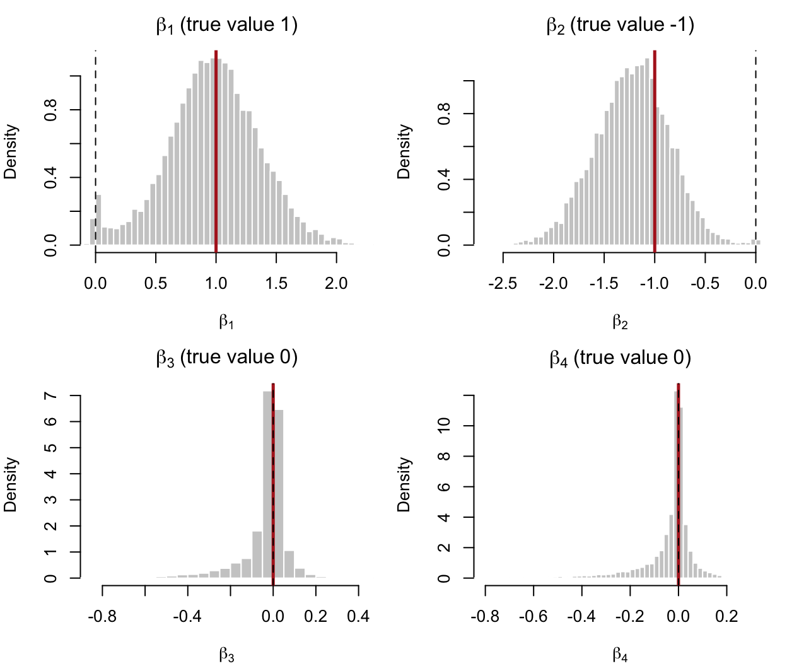
Red line: true value; dashed: 0.
The null coefficients are shrunk tightly around 0; the two signals escape the shrinkage, with posterior means near 1 and -1 and 95% intervals excluding 0. \hat R\approx1: the chains have mixed.
m = 1000 new test cases from the same design. The posterior predictive probability averages over the S posterior draws: \begin{aligned} P(\tilde y = 1\mid\tilde x,\text{data}) &= \int\text{logit}^{-1}(\alpha+\tilde x^\top\beta)\,p(\alpha,\beta\mid\text{data})\,d(\alpha,\beta) \\ &\approx\frac1S\sum_{s=1}^S\text{logit}^{-1}\big(\alpha^{(s)}+\tilde x^\top\beta^{(s)}\big) \end{aligned}
We compare five sets of predicted probabilities \hat p_i: the horseshoe and vague-prior posterior predictive probabilities, the plug-in probabilities from glm and from the LASSO (penalty \lambda\sum_j|\beta_j|, with \lambda chosen by 10-fold cross-validation), and the true probabilities (the best any method could do). Each is scored on the test responses by
set.seed(2025); m_test <- 1000
X_test <- matrix(rnorm(m_test * p_lr), m_test, p_lr)
y_test <- rbinom(m_test, 1, plogis(drop(X_test %*% beta_true)))
post_pred <- function(fit) { # average logit^{-1}(alpha + x beta) over the draws
a <- as.matrix(fit, pars = "alpha")[, 1]; b <- as.matrix(fit, pars = "beta")
colMeans(plogis(sweep(b %*% t(X_test), 1, a, "+")))
}
fit_glm <- suppressWarnings(glm(y ~ ., family = binomial, data = data.frame(y = y_lr, X_lr)))
set.seed(10) # LASSO: lambda by 10-fold CV (minimum CV deviance)
fit_lasso <- glmnet::cv.glmnet(X_lr, y_lr, family = "binomial", alpha = 1, nfolds = 10)
methods <- list(
"horseshoe" = post_pred(fit_logit),
"N(0, 2.5^2)" = post_pred(fit_logit_normal),
"LASSO (CV)" = as.vector(predict(fit_lasso, X_test, s = "lambda.min", type = "response")),
"glm (MLE)" = suppressWarnings(predict(fit_glm, newdata = data.frame(X_test), type = "response")),
"truth" = plogis(drop(X_test %*% beta_true)))
test_deviance <- function(p, y) -2 * sum(dbinom(y, 1, p, log = TRUE))
error_rate <- function(p, y) mean((p > 0.5) != y)| method | 0 as 0 | 0 as 1 | 1 as 0 | 1 as 1 | test deviance | error rate |
|---|---|---|---|---|---|---|
| horseshoe | 369 | 106 | 181 | 344 | 1105.2 | 0.287 |
| N(0, 2.5^2) | 330 | 145 | 222 | 303 | 2643.8 | 0.367 |
| LASSO (CV) | 394 | 81 | 229 | 296 | 1170.8 | 0.310 |
| glm (MLE) | 299 | 176 | 225 | 300 | 25472.5 | 0.401 |
| truth | 337 | 138 | 134 | 391 | 1062.2 | 0.272 |
“a as b”: actual class a classified as b. “truth”: the true probabilities.
glm’s fitted probabilities are almost all 0 or 1, so each wrong prediction costs a huge -2\log\hat P(\tilde y_i): its test deviance is about 18 times the 1386.3 of always predicting 0.5glm EstimatesThe maximum-likelihood fit on the training data: the first ten coefficients, with Wald 95% intervals \hat\beta_j\pm1.96\,\widehat{\text{SE}}_j.
| coef | true | estimate | SE | 95% interval |
|---|---|---|---|---|
| beta[1] | 1 | 38.4 | 111k | (-218k, 218k) |
| beta[2] | -1 | -63.8 | 70k | (-138k, 138k) |
| beta[3] | 0 | 22.3 | 91k | (-179k, 179k) |
| beta[4] | 0 | -30.5 | 89k | (-174k, 174k) |
| beta[5] | 0 | 6.4 | 154k | (-301k, 301k) |
| beta[6] | 0 | 10.4 | 93k | (-183k, 183k) |
| beta[7] | 0 | 10.7 | 79k | (-155k, 155k) |
| beta[8] | 0 | -13.1 | 105k | (-205k, 205k) |
| beta[9] | 0 | 18.2 | 169k | (-332k, 332k) |
| beta[10] | 0 | -35.0 | 82k | (-161k, 161k) |
(k = thousands)
glm stopped after 25 iterations without converging (converged = FALSE): the data are separable, so the likelihood keeps rising as \|\beta\|\to\inftyThe LASSO maximizes \log L(\alpha,\beta) - \lambda\sum_{j}|\beta_j|, which sets small coefficients exactly to 0. Left: 10-fold CV deviance against -\log\lambda (numbers on top: predictors kept); the chosen \lambda (right dashed line) minimizes it.
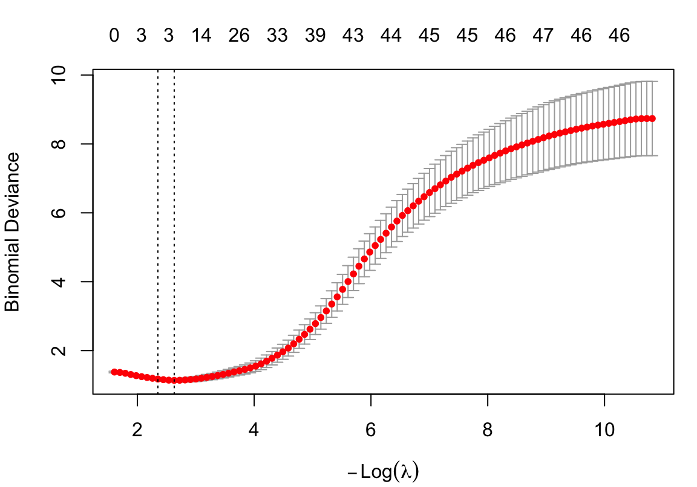
The LASSO keeps 3 of 50 predictors, including both signals, but the penalty that zeroes the nulls also shrinks the signals, and it gives no intervals. The horseshoe’s heavy-tailed local scales let the signals escape shrinkage.
| coef | true | LASSO | horseshoe mean |
|---|---|---|---|
| beta[1] | 1 | 0.47 | 0.97 |
| beta[2] | -1 | -0.60 | -1.22 |
| beta[3] | 0 | 0.00 | -0.03 |
| beta[4] | 0 | 0.00 | -0.04 |
| beta[5] | 0 | 0.00 | 0.03 |
| beta[6] | 0 | 0.00 | -0.02 |
| beta[7] | 0 | 0.00 | 0.00 |
| beta[8] | 0 | 0.00 | -0.04 |
| beta[9] | 0 | 0.00 | -0.01 |
| beta[10] | 0 | 0.00 | -0.01 |